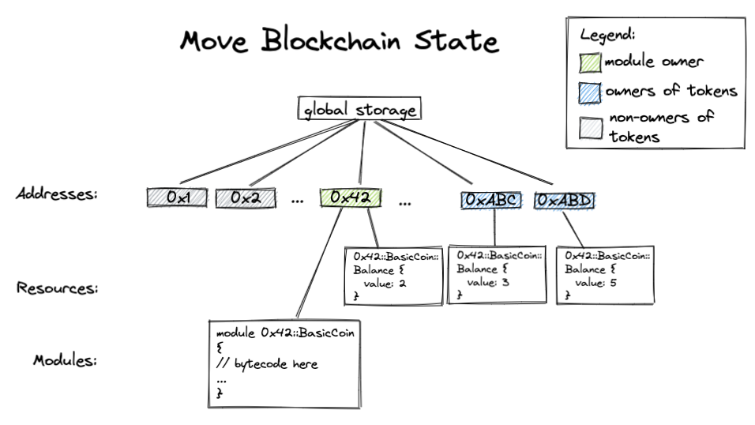

開發 Smart Contract 的語言常見的有:
- Solidity
- Rust
- Javascript
- Vyper
- Yul
- ...
現在又多了一個 Move，為什麼需要再一個語言來增加工程師的負擔，不能統一使用一種語言？！我們來追溯一下 Move 的由來。
這篇文章 比較了Rust 和 Move 的差異，主要是後者把學習曲線降低，讓使用者開發效率提高，數位資產為一級支援(first-class support for resources)，又不犧牲安全性，下圖概要的說明Sui Move的架構。
Sui network 的主要優點為：
- 水平擴充 (Horizontal Scaling)
- 可組合性 (Composability)
- 稀疏重播 (Sparse Replay)
- 鏈上資料儲存 (On-Chain Storage)
把交易區分開來，相似的交易在同個群組，不會全部都擠在一起。
簡單的交易，例如把 NFT / token 從一個帳號轉到另一個帳號，有機會繞過共識機制，讓交易幾乎即時。複雜的交易，例如共享物件，流動池或訂單簿等，因為共識引擎的優化，可以達到 120k tx/s 。
數位資產可以當作函式的參數傳入或傳出，也可以包在其他物件內結構。
可以找出區塊中關聯的交易，而不用從全部的交易中去搜尋，降低搜尋成本。
由於儲存的成本降低，可以直接將數位資料存在鏈上，而不是只是存個連結。
物件 Object
物件是Sui network 的基石，有別於其他的區塊鏈是鍵值配來儲存物件，Sui 物件比較直覺，物件就存放在地址裡，讓數位資產不再是存放在某個智能合約裡。Sui 是以物件為中心的編程模型，物件有擁有權的特性。
物件可以是：
- Owned by an address
- Owned by another object
- Shared
- Immutable
只有物件的擁有地址人可以使用此物件。
物件可以被另一個物件擁有，不是被包覆起來，還是獨立的位於最頂層，可以讀取到。 Dynamic Fields
任何人都可以讀或寫此物件，改變此物件的狀態需要進行共識機制，其他的區塊鏈基本上都是 shared object。
可以用 freeze_object 讓物件不可變
module my_first_package::my_module {
use sui::object::{Self, UID};
use sui::tx_context::{Self, TxContext};
use sui::transfer;
struct Car has key {
id: UID,
speed: u8,
acceleration: u8,
handling: u8
}
fun new(speed: u8, acceleration: u8, handling: u8, ctx: &mut TxContext): Car {
Car {
id: object::new(ctx),
speed,
acceleration,
handling
}
}
public entry fun create(speed: u8, acceleration: u8, handling: u8, ctx: &mut TxContext) {
let car = new(speed, acceleration, handling, ctx);
transfer::transfer(car, tx_context::sender(ctx));
}
}
new 和 create 是命名慣例，entry fun 沒有回傳值，最後一個參數是可變引用 TxContext (optional)